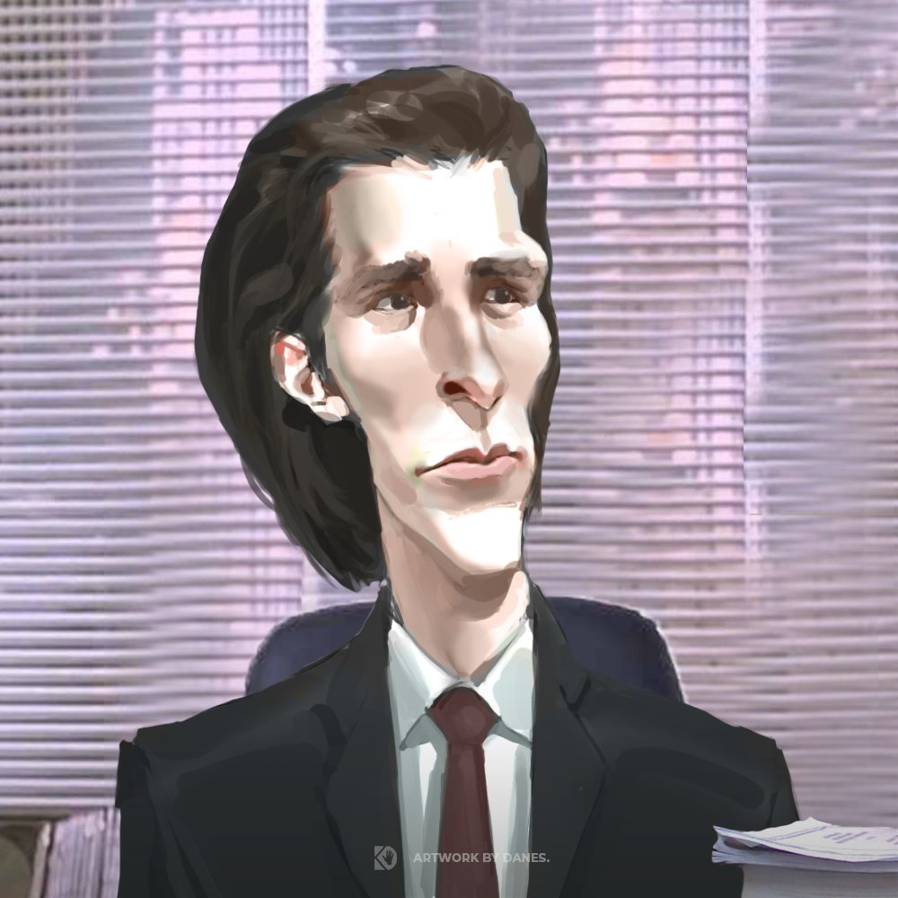

1. No están visibles en la sociedad todo el tiempo, ya que necesitan su espacio personal.
2. Siguen sus propias reglas y a su propio ritmo: pues, no desean vivir sus vidas al modo que los demás les impongan, por lo que cuidan mucho su salud emocional y mental sin importar si esto implica dejar a un lado los estándares de la sociedad
mentira, nunca pdrás ser sigma por solo YO soy sigm sigma (soy psatrick bateman real)
